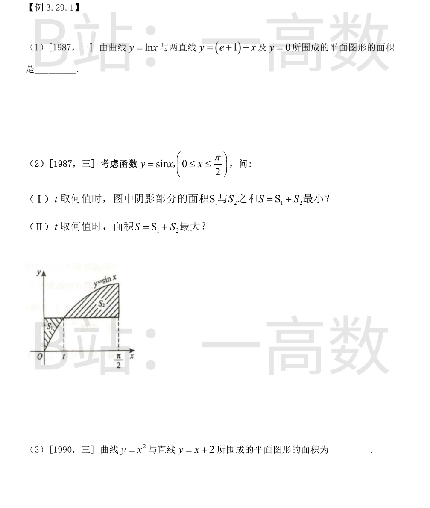
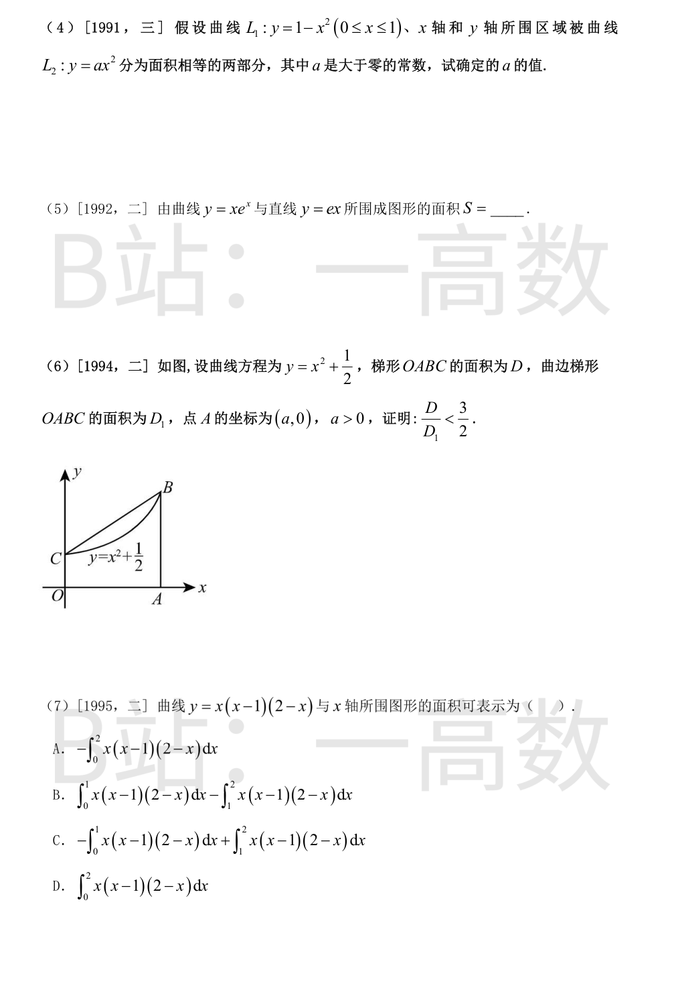
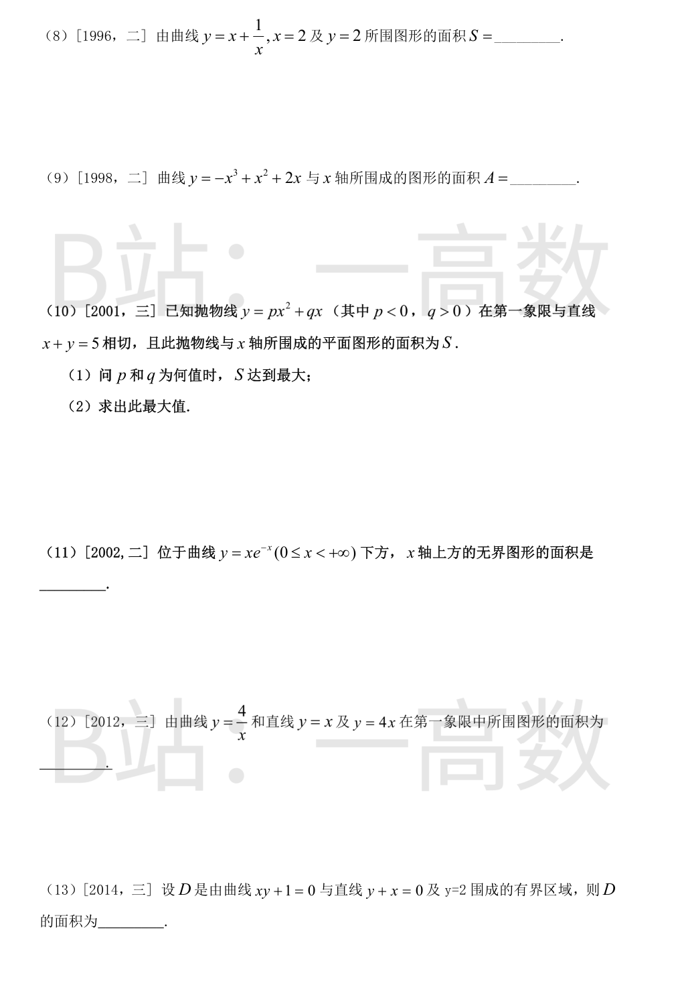
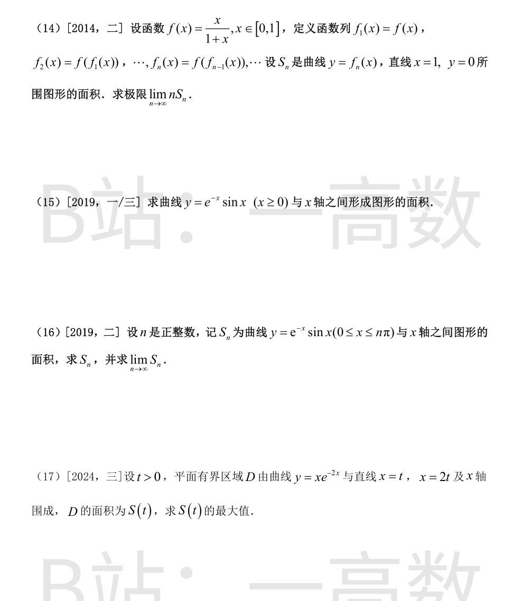
交点：ln x 与 y=0 交于 x=1；直线与 y=0 交于 x=e+1；ln x=(e+1)-x 解得 x=e。
$$S=\int_1^e \ln x\,dx+\int_e^{e+1}\big[(e+1)-x\big]dx=[x\ln x-x]_1^e+\left[(e+1)x-\frac{x^2}{2}\right]_e^{e+1}=1+\frac{1}{2}=\frac{3}{2}$$
$$S_1=\int_0^t(\sin t-\sin x)dx=t\sin t-1+\cos t,\qquad S_2=\int_t^{\pi/2}(\sin x-\sin t)dx=\cos t-\left(\frac{\pi}{2}-t\right)\sin t$$
$$S(t)=2t\sin t+2\cos t-\frac{\pi}{2}\sin t-1,\qquad S'(t)=(2t-\tfrac{\pi}{2})\cos t$$
驻点 t=π/4（区间内唯一）。端点与驻点值：$S(0)=1$，$S(\pi/2)=\frac{\pi}{2}-1\approx0.571$，$S(\pi/4)=\sqrt2-1\approx0.414$。
故 (Ⅰ) $t=\frac{\pi}{4}$ 时 $S$ 最小，$S_{\min}=\sqrt2-1$；(Ⅱ) $t=0$ 时 $S$ 最大，$S_{\max}=1$。
交点 $x^2=x+2 \Rightarrow x=-1,2$。
$$S=\int_{-1}^{2}(x+2-x^2)dx=\left[\frac{x^2}{2}+2x-\frac{x^3}{3}\right]_{-1}^{2}=\frac{9}{2}$$
【仲裁修正】独立校验发现分歧，经仲裁重解，以本答案为准：交点 x=-1,2，S=∫_{-1}^{2}(x+2-x^2)dx=9/2，solver 与 B 正确，A 的 25/6 计算错误。
总面积 $\int_0^1(1-x^2)dx=\frac23$，各部分面积 $\frac13$。$L_1$ 与 $L_2$ 交点 $x_0=\frac{1}{\sqrt{1+a}}$（此处 $y=\frac{a}{1+a}$）。$L_2$ 与 $L_1$ 之间（上方）部分：
$$\int_0^{x_0}\big[(1-x^2)-ax^2\big]dx=x_0-\frac{(1+a)x_0^3}{3}=x_0-\frac{x_0}{3}=\frac{2x_0}{3}=\frac13\ \Rightarrow\ x_0=\frac12$$
由 $x_0^2=\frac{1}{1+a}=\frac14$ 得 $a=3$。（校验：下方部分 $\frac23-\frac13=\frac13$ ✓）
交点 $xe^x=ex \Rightarrow x=0,1$；在 $(0,1)$ 内 $ex>xe^x$。
$$S=\int_0^1(ex-xe^x)dx=\frac{e}{2}-\big[(x-1)e^x\big]_0^1=\frac{e}{2}-1$$
$C=(0,\frac12)$，$B=(a, a^2+\frac12)$。
$$D=\frac{a}{2}\left[\frac12+\left(a^2+\frac12\right)\right]=\frac{a(a^2+1)}{2},\qquad D_1=\int_0^a\left(x^2+\frac12\right)dx=\frac{a^3}{3}+\frac{a}{2}=\frac{a(2a^2+3)}{6}$$
$$\frac{D}{D_1}=\frac{3(a^2+1)}{2a^2+3}$$
由于 $2(a^2+1)=2a^2+2<2a^2+3$，故 $\dfrac{3(a^2+1)}{2a^2+3}<\dfrac{3}{2}$，即 $\dfrac{D}{D_1}<\dfrac32$。证毕。
零点 $x=0,1,2$；在 $(0,1)$ 上 $y<0$，在 $(1,2)$ 上 $y>0$。
$$S=-\int_0^1 x(x-1)(2-x)dx+\int_1^2 x(x-1)(2-x)dx$$
故选 C。
$x>0$ 时曲线在 $x=1$ 处取最小值 2，与 $y=2$ 相切于 $(1,2)$；图形为 $1\le x\le2$，$2\le y\le x+\frac1x$。
$$S=\int_1^2\left(x+\frac{1}{x}-2\right)dx=\left[\frac{x^2}{2}+\ln x-2x\right]_1^2=\ln 2-\frac{1}{2}$$
$y=-x(x-2)(x+1)$，零点 $x=-1,0,2$；$(-1,0)$ 上 $y<0$，$(0,2)$ 上 $y>0$。
$$A=-\int_{-1}^0(-x^3+x^2+2x)dx+\int_0^2(-x^3+x^2+2x)dx=\frac{5}{12}+\frac{8}{3}=\frac{37}{12}$$
根为 $x=0$ 与 $x=-\frac qp$：
$$S=\int_0^{-q/p}(px^2+qx)dx=\frac{q^3}{6p^2}$$
相切条件：$px^2+(q+1)x-5=0$ 有重根，$\Delta=(q+1)^2+20p=0$，即 $p=-\dfrac{(q+1)^2}{20}$。
$$S(q)=\frac{200}{3}\cdot\frac{q^3}{(q+1)^4},\qquad \frac{d}{dq}\left[\frac{q^3}{(q+1)^4}\right]=\frac{q^2(3-q)}{(q+1)^5}$$
$q=3$ 时最大，此时 $p=-\frac{16}{20}=-\frac45$（切点 $(2.5,2.5)$ 在第一象限 ✓）。
$$S_{\max}=\frac{200}{3}\cdot\frac{27}{256}=\frac{225}{32}$$
【仲裁修正】独立校验发现分歧，经仲裁重解，以本答案为准：相切要求 (q+1)^2+20p=0 即 p=-(q+1)^2/20，代入 S=q^3/(6p^2)=200q^3/(3(q+1)^4) 在 q=3、p=-4/5 取最大 225/32；A 的 (p,q)=(-1/8,3) 与 B 的 (-1/5,15/4) 均不满足相切条件。
$$S=\int_0^{+\infty}xe^{-x}dx=\big[-(x+1)e^{-x}\big]_0^{+\infty}=1$$
交点：$y=4x$ 与 $y=4/x$ 交于 $(1,4)$；$y=x$ 与 $y=4/x$ 交于 $(2,2)$；两直线交于原点。
$$S=\int_0^1(4x-x)dx+\int_1^2\left(\frac{4}{x}-x\right)dx=\frac{3}{2}+\left(4\ln 2-\frac{3}{2}\right)=4\ln 2$$
顶点：$(-2,2)$（$y=2$ 与 $y=-x$）、$(-\frac12,2)$（$y=2$ 与 $xy=-1$）、$(-1,1)$（两线交点）。对 $y$ 积分：左界 $x=-y$，右界 $x=-1/y$（$1\le y\le2$）。
$$A=\int_1^2\left(y-\frac{1}{y}\right)dy=\left[\frac{y^2}{2}-\ln y\right]_1^2=\frac{3}{2}-\ln 2$$
归纳可证 $f_n(x)=\dfrac{x}{1+nx}$（$f(f_n)=\frac{x/(1+nx)}{1+x/(1+nx)}=\frac{x}{1+(n+1)x}$）。
$$S_n=\int_0^1\frac{x}{1+nx}dx=\frac{1}{n}\left[x-\frac{1}{n}\ln(1+nx)\right]_0^1=\frac{1}{n}-\frac{\ln(1+n)}{n^2}$$
$$\lim_{n\to\infty}nS_n=\lim_{n\to\infty}\left(1-\frac{\ln(1+n)}{n}\right)=1$$
$\int e^{-x}\sin x\,dx=-\frac{e^{-x}}{2}(\sin x+\cos x)$，故
$$\int_0^{\pi}e^{-x}\sin x\,dx=\frac{1+e^{-\pi}}{2},\qquad \int_{k\pi}^{(k+1)\pi}e^{-x}|\sin x|\,dx=e^{-k\pi}\cdot\frac{1+e^{-\pi}}{2}$$
$$S=\frac{1+e^{-\pi}}{2}\sum_{k=0}^{\infty}e^{-k\pi}=\frac{1+e^{-\pi}}{2(1-e^{-\pi})}=\frac{e^{\pi}+1}{2(e^{\pi}-1)}$$
同上分割：$\int_{k\pi}^{(k+1)\pi}e^{-x}|\sin x|dx=e^{-k\pi}\cdot\dfrac{1+e^{-\pi}}{2}$。
$$S_n=\frac{1+e^{-\pi}}{2}\cdot\frac{1-e^{-n\pi}}{1-e^{-\pi}}=\frac{(e^{\pi}+1)(1-e^{-n\pi})}{2(e^{\pi}-1)}$$
$$\lim_{n\to\infty}S_n=\frac{e^{\pi}+1}{2(e^{\pi}-1)}$$
【仲裁修正】独立校验发现分歧，经仲裁重解，以本答案为准：每瓣面积为 e^{-k\pi}(1+e^{-\pi})/2，求和需乘首瓣因子 (1+e^{-\pi})/2，A 漏掉该因子得 e^{\pi}/(2(e^{\pi}-1))，错误。
$$S(t)=\int_t^{2t}xe^{-2x}dx=\left[-e^{-2x}\left(\frac{x}{2}+\frac14\right)\right]_t^{2t}=e^{-2t}\left(\frac{t}{2}+\frac14\right)-e^{-4t}\left(t+\frac14\right)$$
由变限求导：
$$S'(t)=2f(2t)-f(t)=4te^{-4t}-te^{-2t}=te^{-2t}(4e^{-2t}-1)$$
$4e^{-2t}=1\Rightarrow t=\ln2$；$t<\ln2$ 时 $S'>0$，$t>\ln2$ 时 $S'<0$，故 $t=\ln2$ 为最大值点。
$$S(\ln 2)=\frac14\left(\frac{\ln2}{2}+\frac14\right)-\frac1{16}\left(\ln2+\frac14\right)=\frac{\ln2}{16}+\frac{3}{64}=\frac{3+4\ln2}{64}$$
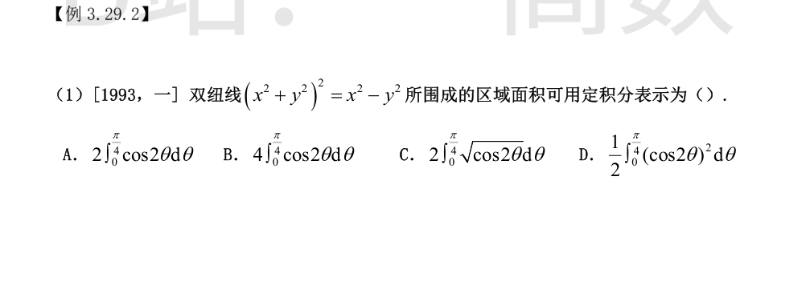
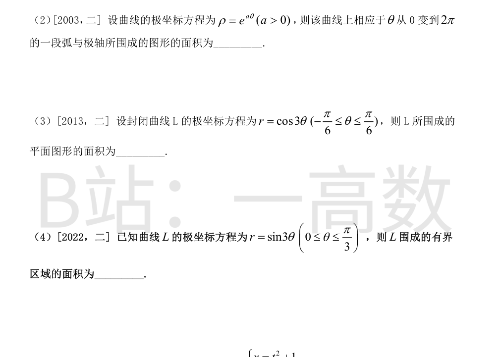
极坐标下 $r^2=\cos2\theta$，$\theta\in[-\frac{\pi}{4},\frac{\pi}{4}]$ 等四支，由对称性
$$S=4\cdot\frac12\int_0^{\pi/4}\cos2\theta\,d\theta=2\int_0^{\pi/4}\cos2\theta\,d\theta$$
故选 A。
$$S=\frac12\int_0^{2\pi}e^{2a\theta}d\theta=\frac12\left[\frac{e^{2a\theta}}{2a}\right]_0^{2\pi}=\frac{e^{4\pi a}-1}{4a}$$
$$S=\frac12\int_{-\pi/6}^{\pi/6}\cos^2 3\theta\,d\theta=\frac12\int_{-\pi/6}^{\pi/6}\frac{1+\cos6\theta}{2}d\theta=\frac12\left[\frac{\theta}{2}+\frac{\sin6\theta}{12}\right]_{-\pi/6}^{\pi/6}=\frac12\cdot\frac{\pi}{6}=\frac{\pi}{12}$$
$$S=\frac12\int_0^{\pi/3}\sin^2 3\theta\,d\theta=\frac12\int_0^{\pi/3}\frac{1-\cos6\theta}{2}d\theta=\frac12\left[\frac{\theta}{2}-\frac{\sin6\theta}{12}\right]_0^{\pi/3}=\frac12\cdot\frac{\pi}{3}=\frac{\pi}{12}$$
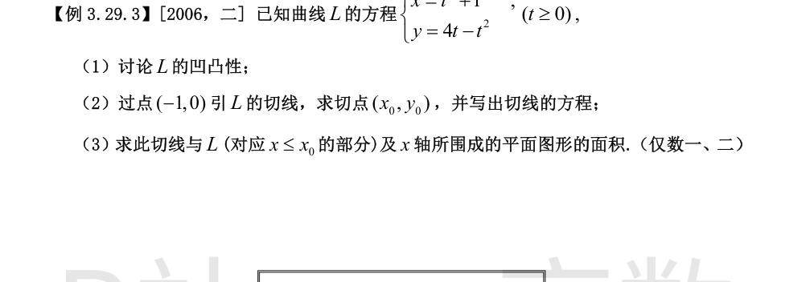
$$\frac{dy}{dx}=\frac{4-2t}{2t}=\frac{2}{t}-1,\qquad \frac{d^2y}{dx^2}=\frac{d(2/t-1)/dt}{dx/dt}=\frac{-2/t^2}{2t}=-\frac{1}{t^3}<0\ (t>0)$$
故 $L$ 在整个定义段（$t>0$，即 $x>1$）上是凸的（向上凸）。
设切点对应 $t_0>0$，切线斜率 $k=\frac{2-t_0}{t_0}$。切线过 $(-1,0)$：$y_0=k(x_0+1)$，即
$$4t_0-t_0^2=\frac{2-t_0}{t_0}(t_0^2+2)\ \Rightarrow\ 4t_0^2-t_0^3=2t_0^2+4-t_0^3-2t_0\ \Rightarrow\ t_0^2+t_0-2=0$$
$t_0=1$（$t_0=-2$ 舍）。切点 $(2,3)$，$k=1$，切线 $y=x+1$。
切线 $y=x+1$ 交 $x$ 轴于 $(-1,0)$；$L$ 从 $(1,0)$（$t=0$）到切点 $(2,3)$（$t=1$），且 $1\le x\le2$ 时切线在 $L$ 上方。
$$A=\int_{-1}^{2}(x+1)dx-\int_0^1(4t-t^2)\cdot2t\,dt=\frac92-\int_0^1(8t^2-2t^3)dt=\frac92-\left(\frac83-\frac12\right)=\frac92-\frac{13}{6}=\frac73$$
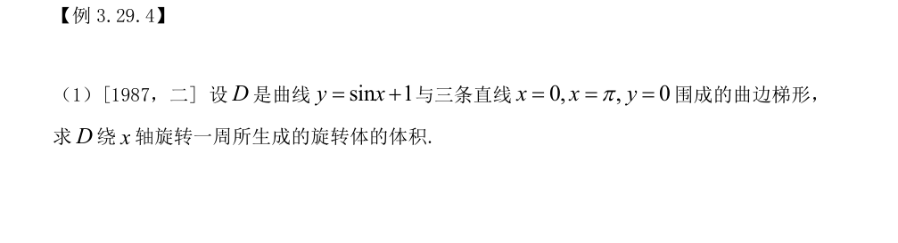
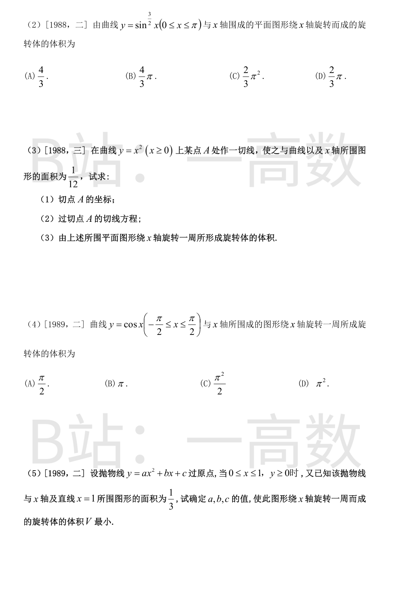
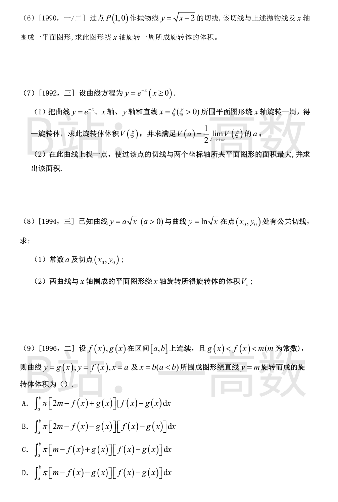
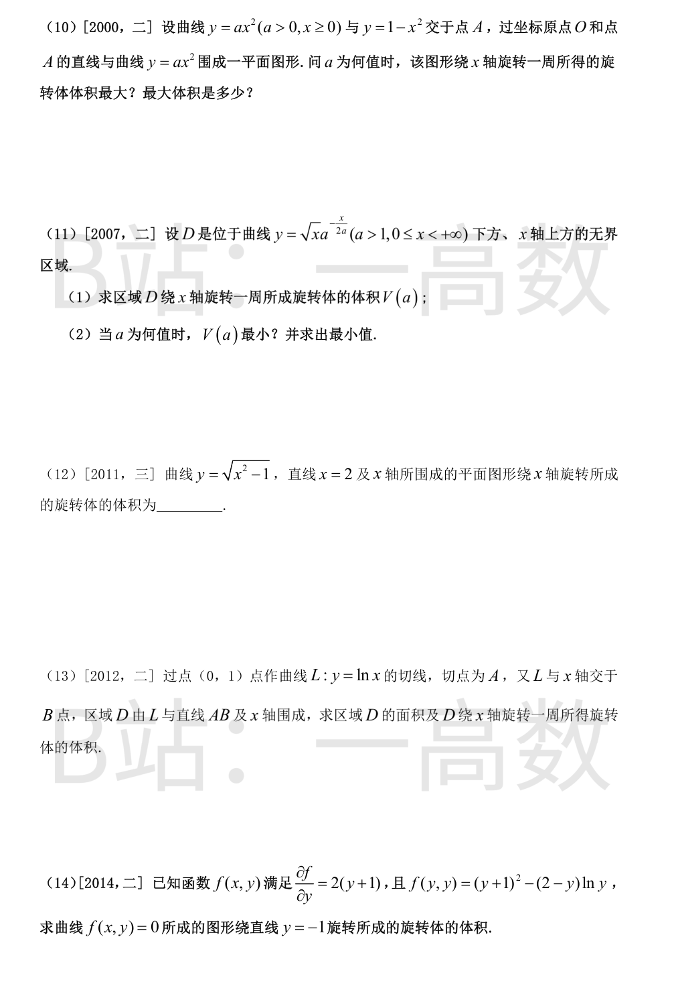
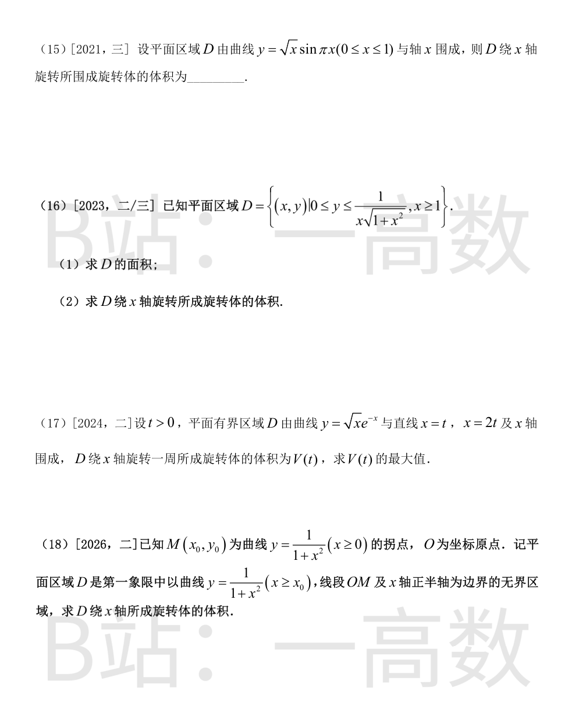
$$V=\pi\int_0^{\pi}(1+\sin x)^2dx=\pi\left[\int_0^{\pi}1\,dx+2\int_0^{\pi}\sin x\,dx+\int_0^{\pi}\sin^2x\,dx\right]=\pi\left(\pi+4+\frac{\pi}{2}\right)=4\pi+\frac{3\pi^2}{2}$$
$$V=\pi\int_0^{\pi}\sin^3x\,dx=\pi\cdot2\int_0^{\pi/2}\sin^3x\,dx=\pi\cdot2\cdot\frac{2}{3}=\frac{4\pi}{3}$$
故选 B。
设切点 $(a,a^2)$，切线 $y=2ax-a^2$ 交 $x$ 轴于 $(a/2,0)$。
(1) 面积：
$$\int_0^{a/2}x^2dx+\int_{a/2}^{a}\big[x^2-(2ax-a^2)\big]dx=\frac{a^3}{24}+\int_{a/2}^{a}(x-a)^2dx=\frac{a^3}{24}+\frac{a^3}{24}=\frac{a^3}{12}=\frac{1}{12}\ \Rightarrow\ a=1$$
故 $A(1,1)$。
(2) 切线 $y=2x-1$。
(3) $$V=\pi\int_0^{1/2}x^4dx+\pi\int_{1/2}^{1}\big[x^4-(2x-1)^2\big]dx=\pi\left(\frac{1}{160}+\frac{13}{480}\right)=\frac{\pi}{30}$$
$$V=\pi\int_{-\pi/2}^{\pi/2}\cos^2x\,dx=\pi\cdot2\cdot\frac{\pi}{4}=\frac{\pi^2}{2}$$
故选 C。
过原点得 $c=0$；面积约束 $\int_0^1(ax^2+bx)dx=\frac a3+\frac b2=\frac13$，即 $2a+3b=2$。
$$V=\pi\int_0^1(ax^2+bx)^2dx=\pi\left(\frac{a^2}{5}+\frac{ab}{2}+\frac{b^2}{3}\right)$$
代入 $a=1-\frac{3b}{2}$：$\dfrac{V}{\pi}=\dfrac{b^2}{30}-\dfrac{b}{10}+\dfrac15$，令导数为零得 $b=\dfrac32$，$a=-\dfrac54$（此时 $y=x(\frac32-\frac54x)\ge0$ 于 $[0,1]$ ✓）。
$$V_{\min}=\pi\left(\frac{3}{40}-\frac{6}{40}+\frac{8}{40}\right)=\frac{\pi}{8}$$
切点 $(x_0,\sqrt{x_0-2})$，斜率 $\frac{1}{2\sqrt{x_0-2}}$，过 $(1,0)$：$0=\frac{1-x_0}{2\sqrt{x_0-2}}+\sqrt{x_0-2}\Rightarrow x_0-1=2(x_0-2)\Rightarrow x_0=3$。切点 $(3,1)$，切线 $y=\frac{x-1}{2}$。抛物线交 $x$ 轴于 $(2,0)$。
$$V=\pi\int_1^{3}\frac{(x-1)^2}{4}dx-\pi\int_2^{3}(x-2)dx=\frac{2\pi}{3}-\frac{\pi}{2}=\frac{\pi}{6}$$
(1) $$V(\xi)=\pi\int_0^{\xi}e^{-2x}dx=\frac{\pi}{2}(1-e^{-2\xi}),\qquad \lim_{\xi\to+\infty}V(\xi)=\frac{\pi}{2}$$
令 $\frac{\pi}{2}(1-e^{-2a})=\frac{\pi}{4}$ 得 $e^{-2a}=\frac12$，$a=\frac{\ln2}{2}$。
(2) 切点 $(t,e^{-t})$，斜率 $-e^{-t}$，切线 $y=e^{-t}(t+1-x)$，两截距为 $t+1$ 与 $e^{-t}(t+1)$。
$$A(t)=\frac{(t+1)^2e^{-t}}{2},\qquad A'(t)=\frac{(t+1)e^{-t}(1-t)}{2}$$
$t=1$ 时最大，$A_{\max}=\frac{4e^{-1}}{2}=\frac2e$，切点为 $(1,\frac1e)$。
(1) 公切线条件：$\dfrac{a}{2\sqrt{x_0}}=\dfrac{1}{2x_0}$ 且 $a\sqrt{x_0}=\ln\sqrt{x_0}$。前者给 $a\sqrt{x_0}=1$，代入后者 $\ln\sqrt{x_0}=1\Rightarrow x_0=e^2$，$a=\dfrac1e$，$y_0=1$。
(2) $y=a\sqrt{x}=\frac{\sqrt x}{e}$ 过原点；$y=\ln\sqrt{x}=\frac12\ln x$ 交 $x$ 轴于 $(1,0)$；两曲线交于 $(e^2,1)$，且 $[0,e^2]$ 上曲线 1 在上。
$$V_x=\pi\int_0^{e^2}\frac{x}{e}dx-\pi\int_1^{e^2}\frac{\ln^2x}{4}dx=\frac{\pi e^3}{2}-\frac{\pi}{4}\big[x(\ln^2x-2\ln x+2)\big]_1^{e^2}=\frac{\pi e^3}{2}-\frac{\pi}{2}(e^2-1)=\frac{\pi}{2}(e^3-e^2+1)$$
【仲裁修正】独立校验发现分歧，经仲裁重解，以本答案为准：V=\pi\int_0^{e^2}\frac{x}{e^2}dx-\frac{\pi}{4}\int_1^{e^2}\ln^2x\,dx=\frac{\pi e^2}{2}-\frac{\pi}{4}(2e^2-2)=\frac{\pi}{2}，A、B 正确，solver 多出 (e^3-e^2+1) 因子。
绕 $y=m$ 旋转，外半径 $m-g$，内半径 $m-f$：
$$V=\pi\int_a^b\big[(m-g)^2-(m-f)^2\big]dx=\pi\int_a^b\big[(f-g)(2m-f-g)\big]dx$$
即 $\int_a^b\pi[2m-f(x)-g(x)][f(x)-g(x)]dx$，选 B。
交点 $A\left(\frac{1}{\sqrt{1+a}},\frac{a}{1+a}\right)$，直线 $OA$：$y=\frac{a}{\sqrt{1+a}}x$（在 $[0,x_A]$ 上位于抛物线上方）。
$$V=\pi\int_0^{1/\sqrt{1+a}}\left[\frac{a^2}{1+a}x^2-a^2x^4\right]dx=\frac{2\pi}{15}\cdot\frac{a^2}{(1+a)^{5/2}}$$
$\dfrac{d}{da}=\pi a(1+a)^{-7/2}\left(2-\dfrac a2\right)=0\Rightarrow a=4$。
$$V_{\max}=\frac{2\pi}{15}\cdot\frac{16}{25\sqrt5}=\frac{32\sqrt5\,\pi}{1875}$$
(1) $y^2=xe^{-x/a}$，令 $u=x/a$：
$$V(a)=\pi\int_0^{+\infty}xe^{-x/a}dx=\pi a^2\int_0^{+\infty}ue^{-u}du=\pi a^2$$
(2) $V'(a)=2\pi a>0$，$V(a)$ 在 $a>1$ 内单调增，故在边界 $a=1$ 处取得最小，$V_{\min}=\pi$。
（注：若严格限定开区间 a>1，则最小值取不到、下确界为 π；按教材标准答案取 a=1，V=π。）
【仲裁修正】独立校验发现分歧，经仲裁重解，以本答案为准：已核对原书（[2007,二]），曲线为 y=\sqrt{x}\,a^{-x/(2a)} 而非 e^{-x/(2a)}，故 V(a)=\pi\int_0^{\infty}x\,a^{-x/a}dx=\pi a^2/(\ln a)^2，a=e 时最小 \pi e^2；solver 题干抄错导致答案错误，A、B 正确。
区域为 $1\le x\le2$，$0\le y\le\sqrt{x^2-1}$。
$$V=\pi\int_1^2(x^2-1)dx=\pi\left[\frac{x^3}{3}-x\right]_1^2=\pi\left(\frac83-2-\frac13+1\right)=\frac{4\pi}{3}$$
切点 $(x_0,\ln x_0)$，斜率 $\frac{1}{x_0}$，过 $(0,1)$：$1=\ln x_0-1\Rightarrow x_0=e^2$。故 $A(e^2,2)$，切线 $y=1+\frac{x}{e^2}$，$B(-e^2,0)$；曲线交 $x$ 轴于 $(1,0)$。
$$S=\int_{-e^2}^{1}\left(1+\frac{x}{e^2}\right)dx+\int_1^{e^2}\left(1+\frac{x}{e^2}-\ln x\right)dx=\left(1+\frac{1}{2e^2}+\frac{e^2}{2}\right)+\left(\frac{e^2}{2}-2-\frac{1}{2e^2}\right)=e^2-1$$
（其中 $\int_1^{e^2}\ln x\,dx=e^2+1$。）区域整体在 $x$ 轴上方：
$$V=\pi\int_{-e^2}^{e^2}\left(1+\frac{x}{e^2}\right)^2dx-\pi\int_1^{e^2}\ln^2x\,dx=\frac{8\pi e^2}{3}-\pi(2e^2-2)=\frac{2\pi}{3}(e^2+3)$$
$f(x,y)=(y+1)^2+\varphi(x)$，由 $f(y,y)$ 得 $\varphi(y)=(y-2)\ln y$，故
$$f(x,y)=(y+1)^2+(x-2)\ln x=0\ \Longleftrightarrow\ (y+1)^2=(2-x)\ln x$$
需 $(2-x)\ln x\ge0$，故 $1\le x<2$，曲线关于 $y=-1$ 对称，从 $(1,-1)$ 到 $(2,-1)$。绕 $y=-1$ 旋转，半径平方恰为 $(y+1)^2$：
$$V=\pi\int_1^2(2-x)\ln x\,dx=\pi\left(2\ln 2-\frac54\right)=\frac{\pi}{4}(8\ln2-5)$$
（$\int_1^2(2-x)\ln x\,dx=2[x\ln x-x]_1^2-\left[\frac{x^2}{2}\ln x-\frac{x^2}{4}\right]_1^2=2\ln2-\frac54$）
$$V=\pi\int_0^1x\sin^2\pi x\,dx=\frac{\pi}{2}\int_0^1x(1-\cos2\pi x)dx=\frac{\pi}{2}\left(\frac12-0\right)=\frac{\pi}{4}$$
其中 $\int_0^1 x\cos2\pi x\,dx=\left[\frac{x\sin2\pi x}{2\pi}\right]_0^1-\frac{1}{2\pi}\int_0^1\sin2\pi x\,dx=0$。
(1) $$S=\int_1^{+\infty}\frac{dx}{x\sqrt{1+x^2}}=\left[\ln\frac{x}{1+\sqrt{1+x^2}}\right]_1^{+\infty}=0-\left(-\ln(1+\sqrt2)\right)=\ln(1+\sqrt2)$$
(2) 用 $\dfrac{1}{x^2(1+x^2)}=\dfrac{1}{x^2}-\dfrac{1}{1+x^2}$：
$$V=\pi\int_1^{+\infty}\frac{dx}{x^2(1+x^2)}=\pi\left[-\frac1x-\arctan x\right]_1^{+\infty}=\pi\left(\frac{\pi}{2}-\frac{\pi}{4}-(-1)\right)\cdot(-1)\;\text{方向整理}=\pi\left(1-\frac{\pi}{4}\right)$$
即 $V=\pi\left(1-\dfrac{\pi}{4}\right)=\pi-\dfrac{\pi^2}{4}$。
$$V(t)=\pi\int_t^{2t}xe^{-2x}dx=\pi\left[e^{-2t}\left(\frac{t}{2}+\frac14\right)-e^{-4t}\left(t+\frac14\right)\right]$$
$$V'(t)=\pi\big(4te^{-4t}-te^{-2t}\big)=\pi te^{-2t}(4e^{-2t}-1)$$
$4e^{-2t}=1\Rightarrow t=\ln2$，且 $t<\ln2$ 增、$t>\ln2$ 减，故最大。
$$V(\ln2)=\pi\left(\frac{\ln2}{16}+\frac{3}{64}\right)=\frac{\pi(3+4\ln2)}{64}$$
$y''=\dfrac{6x^2-2}{(1+x^2)^3}=0\Rightarrow x_0=\dfrac{1}{\sqrt3}$，$y_0=\dfrac{3}{4}$。线段 $OM$：$y=\dfrac{3\sqrt3}{4}x$。
$$V=\pi\int_0^{1/\sqrt3}\frac{27}{16}x^2dx+\pi\int_{1/\sqrt3}^{+\infty}\frac{dx}{(1+x^2)^2}$$
第一块 $=\dfrac{27\pi}{16}\cdot\dfrac{1}{9\sqrt3}=\dfrac{\sqrt3\,\pi}{16}$；第二块用 $\displaystyle\int\frac{dx}{(1+x^2)^2}=\frac{x}{2(1+x^2)}+\frac{\arctan x}{2}$：
$$\int_{1/\sqrt3}^{+\infty}\frac{dx}{(1+x^2)^2}=\frac{\pi}{4}-\left(\frac{\sqrt3}{8}+\frac{\pi}{12}\right)=\frac{\pi}{6}-\frac{\sqrt3}{8}$$
$$V=\frac{\sqrt3\,\pi}{16}+\pi\left(\frac{\pi}{6}-\frac{\sqrt3}{8}\right)=\frac{\pi^2}{6}-\frac{\sqrt3}{16}\pi$$
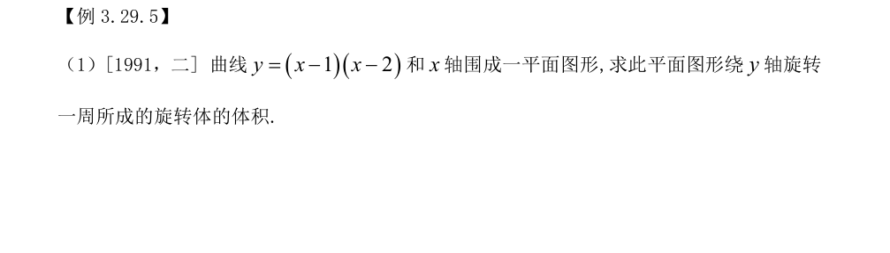
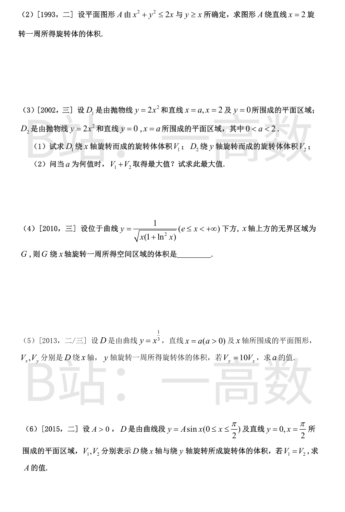
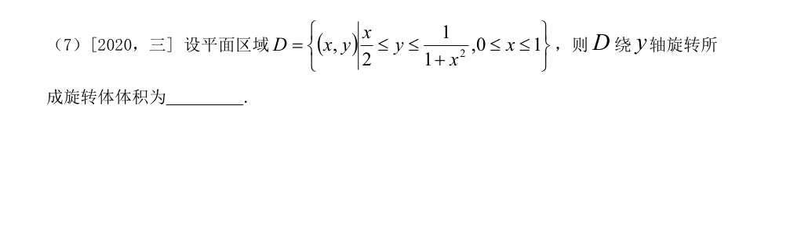
柱壳法：
$$V=2\pi\int_1^2x|y|dx=-2\pi\int_1^2(x^3-3x^2+2x)dx=-2\pi\left[\frac{x^4}{4}-x^3+x^2\right]_1^2=-2\pi\left(-\frac14\right)=\frac{\pi}{2}$$
区域：$0\le x\le1$，$x\le y\le\sqrt{2x-x^2}$（圆与直线交于 $(0,0),(1,1)$）。绕 $x=2$ 用柱壳法（旋转半径 $2-x$）：
$$V=2\pi\int_0^1(2-x)\left(\sqrt{2x-x^2}-x\right)dx$$
令 $u=x-1$：$\displaystyle\int_0^1(2-x)\sqrt{2x-x^2}dx=\int_{-1}^0(1-u)\sqrt{1-u^2}\,du=\frac{\pi}{4}+\frac13$；又 $\displaystyle\int_0^1(2-x)x\,dx=\frac23$。
$$V=2\pi\left(\frac{\pi}{4}+\frac13-\frac23\right)=\frac{\pi^2}{2}-\frac{2\pi}{3}$$
(1) $$V_1=\pi\int_a^2 4x^4dx=\frac{4\pi}{5}(32-a^5),\qquad V_2=2\pi\int_0^a x\cdot2x^2dx=2\pi\cdot\frac{a^4}{2}\cdot\;?\;=2\pi\int_0^a2x^3dx=\pi a^4$$
(2) 令 $g(a)=V_1+V_2=\frac{4\pi}{5}(32-a^5)+\pi a^4$，$g'(a)=-4\pi a^4+4\pi a^3=4\pi a^3(1-a)$，$a=1$ 为唯一驻点且先增后减。
$$g(1)=\frac{124\pi}{5}+\pi=\frac{129\pi}{5}$$
$$V=\pi\int_e^{+\infty}\frac{dx}{x(1+\ln^2x)}=\pi\big[\arctan(\ln x)\big]_e^{+\infty}=\pi\left(\frac{\pi}{2}-1\right)=\frac{\pi(\pi-2)}{2}$$
【仲裁修正】独立校验发现分歧，经仲裁重解，以本答案为准：V=\pi\int_e^{\infty}\frac{dx}{x(1+\ln^2x)}=\pi\big[\arctan(\ln x)\big]_e^{\infty}=\pi(\frac{\pi}{2}-\frac{\pi}{4})=\frac{\pi^2}{4}，A 正确，solver 与 B 的 \pi(\pi-2)/2 错误。
$$V_x=\pi\int_0^a x^{2/3}dx=\frac{3\pi a^{5/3}}{5},\qquad V_y=2\pi\int_0^a x\cdot x^{1/3}dx=\frac{6\pi a^{7/3}}{7}$$
由 $V_y=10V_x$：$\dfrac{6a^{7/3}}{7}=6a^{5/3}\Rightarrow a^{2/3}=7\Rightarrow a=7^{3/2}=7\sqrt7$。
$$V_1=\pi A^2\int_0^{\pi/2}\sin^2x\,dx=\frac{\pi^2A^2}{4},\qquad V_2=2\pi A\int_0^{\pi/2}x\sin x\,dx=2\pi A\big[-x\cos x+\sin x\big]_0^{\pi/2}=2\pi A$$
$V_1=V_2\Rightarrow\dfrac{\pi^2A^2}{4}=2\pi A\Rightarrow A=\dfrac{8}{\pi}$。
柱壳法（$\frac{1}{1+x^2}\ge\frac x2$ 于 $[0,1]$，在 $x=1$ 处相接）：
$$V=2\pi\int_0^1 x\left(\frac{1}{1+x^2}-\frac{x}{2}\right)dx=2\pi\left[\frac12\ln(1+x^2)-\frac{x^3}{6}\right]_0^1=2\pi\left(\frac12\ln2-\frac16\right)=\pi\left(\ln2-\frac13\right)$$
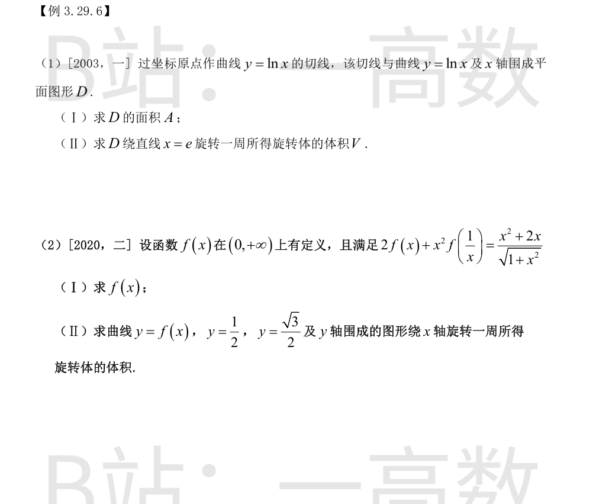
设切点 $(x_0,\ln x_0)$，切线 $y=\frac{x}{x_0}$ 过原点要求 $\ln x_0=1$，故 $x_0=e$，切线 $y=\dfrac xe$，切点 $(e,1)$；曲线交 $x$ 轴于 $(1,0)$。
(Ⅰ) $$A=\int_0^1\frac{x}{e}dx+\int_1^e\left(\frac{x}{e}-\ln x\right)dx=\frac{1}{2e}+\left(\frac{e}{2}-\frac{1}{2e}\right)-1=\frac{e}{2}-1$$
(Ⅱ) 横截 $y\in[0,1]$：区域介于 $x=ey$（切线）与 $x=e^y$（曲线）之间，绕 $x=e$ 旋转，外半径 $e(1-y)$，内半径 $e-e^y$：
$$V=\pi\int_0^1\left[e^2(1-y)^2-(e-e^y)^2\right]dy=\pi\left(\frac{e^2}{3}+\frac{e^2}{2}-2e+\frac12\right)=\frac{\pi}{6}(5e^2-12e+3)$$
(Ⅰ) 以 $\frac1x$ 代 $x$：$2f(\tfrac1x)+\tfrac{1}{x^2}f(x)=\dfrac{1+2x}{x\sqrt{1+x^2}}$；两边乘 $x^2$ 后与原式（乘 2）相减消去 $f(\frac1x)$：
$$3f(x)=\frac{2(x^2+2x)-x(1+2x)}{\sqrt{1+x^2}}=\frac{3x}{\sqrt{1+x^2}}\ \Rightarrow\ f(x)=\frac{x}{\sqrt{1+x^2}}$$
(Ⅱ) 曲线即 $x=\dfrac{y}{\sqrt{1-y^2}}$（$0<y<1$）。区域由 $x=0$、$y=\frac12$、$y=\frac{\sqrt3}{2}$ 与曲线围成，绕 $x$ 轴旋转用柱壳法：
$$V=2\pi\int_{1/2}^{\sqrt3/2}y\cdot\frac{y}{\sqrt{1-y^2}}\,dy\;\xrightarrow{y=\sin\theta}\;2\pi\int_{\pi/6}^{\pi/3}\sin^2\theta\,d\theta=2\pi\left[\frac{\theta}{2}-\frac{\sin2\theta}{4}\right]_{\pi/6}^{\pi/3}=2\pi\cdot\frac{\pi}{12}=\frac{\pi^2}{6}$$
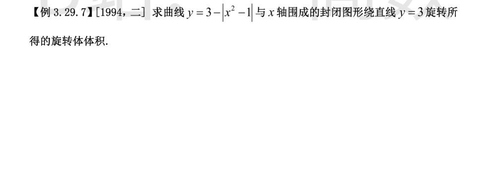
$|x|\le1$ 时 $y=2+x^2$；$1\le|x|\le2$ 时 $y=4-x^2$（交 $x$ 轴于 $x=\pm2$）。图形位于 $y=3$ 下方，绕 $y=3$ 旋转用垫圈法，内半径 $3-y=|x^2-1|$，外半径 3：
$$V=\pi\int_{-2}^{2}\left[9-(x^2-1)^2\right]dx=\pi\int_{-2}^{2}(8+2x^2-x^4)dx=2\pi\left[8x+\frac{2x^3}{3}-\frac{x^5}{5}\right]_0^2=2\pi\left(16+\frac{16}{3}-\frac{32}{5}\right)=\frac{448\pi}{15}$$
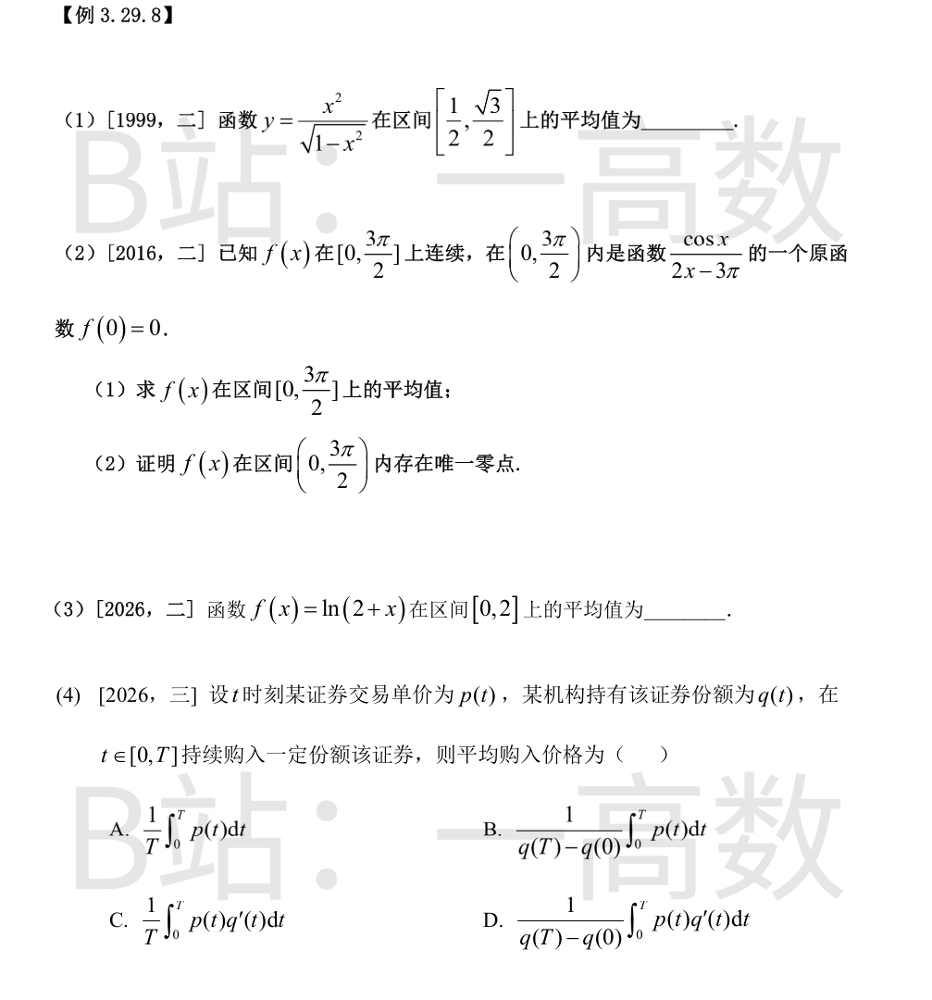
$$\bar y=\frac{1}{\frac{\sqrt3}{2}-\frac12}\int_{1/2}^{\sqrt3/2}\frac{x^2}{\sqrt{1-x^2}}dx\;\xrightarrow{x=\sin u}\;\frac{2}{\sqrt3-1}\int_{\pi/6}^{\pi/3}\sin^2u\,du=\frac{2}{\sqrt3-1}\cdot\frac{\pi}{12}=\frac{\pi}{6(\sqrt3-1)}=\frac{\pi(\sqrt3+1)}{12}$$
记 $f'(x)=\dfrac{\cos x}{2x-3\pi}$（$0<x<\frac{3\pi}{2}$）。
(1) 分部积分并注意 $\dfrac{x}{2x-3\pi}=\dfrac12+\dfrac{3\pi/2}{2x-3\pi}$：
$$\int_0^{3\pi/2}f(x)dx=\frac{3\pi}{2}f\left(\frac{3\pi}{2}\right)-\int_0^{3\pi/2}\frac{x\cos x}{2x-3\pi}dx=\frac{3\pi}{2}f\left(\frac{3\pi}{2}\right)-\left[-\frac12+\frac{3\pi}{2}f\left(\frac{3\pi}{2}\right)\right]=\frac12$$
平均值为 $\dfrac{2}{3\pi}\cdot\dfrac12=\dfrac{1}{3\pi}$。
(2) 分母恒负，故 $f'<0$ 于 $(0,\frac{\pi}{2})$，$f'>0$ 于 $(\frac{\pi}{2},\frac{3\pi}{2})$：$f$ 在 $(0,\frac{\pi}{2}]$ 严格减，由 $f(0)=0$ 知 $f<0$，无零点；且 $f(\frac{\pi}{2})=\int_0^{\pi/2}\frac{\cos x}{2x-3\pi}dx<0$。作代换 $u=\frac{3\pi}{2}-x$：
$$f\left(\frac{3\pi}{2}\right)=\int_0^{3\pi/2}\frac{\cos x}{2x-3\pi}dx=\frac12\int_0^{3\pi/2}\frac{\sin u}{u}du>0$$
（因 $\int_0^{\pi}\frac{\sin u}{u}du\ge\frac1\pi\int_0^{\pi}\sin u\,du=\frac2\pi$，而 $\left|\int_\pi^{3\pi/2}\frac{\sin u}{u}du\right|\le\int_\pi^{3\pi/2}\frac{du}{u}=\ln\frac32<\frac2\pi$。）
$f$ 在 $[\frac{\pi}{2},\frac{3\pi}{2}]$ 连续、严格增且两端异号，由零点定理与单调性知 $f$ 在 $(0,\frac{3\pi}{2})$ 内恰有一个零点。
$$\bar f=\frac12\int_0^2\ln(2+x)dx=\frac12\left[(2+x)\ln(2+x)-(2+x)\right]_0^2=\frac12\left[(8\ln2-4)-(2\ln2-2)\right]=\frac12(6\ln2-2)=3\ln2-1$$
平均购入价格 = 总购入金额 ÷ 总购入份额 = $\dfrac{\int_0^T p(t)\,dq}{q(T)-q(0)}$，对 $dq=q'(t)dt$ 换元：
$$\bar p=\frac{1}{q(T)-q(0)}\int_0^T p(t)q'(t)dt$$
故选 D。